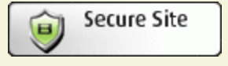
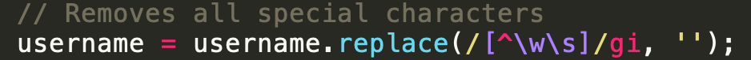

Jack hired me to find any potential security and privacy vulnerabilities within his web application. His web application was deployed on Heroku to display the scores and names of individuals that play his 2048 game along with when they achieved that score. He stores all data on a server called Mongo DB which is an add on for Heruko used to communicate with the web server each time a round of the game is finished.
First, I took a look at the HTML file of his web application and tried to see if there are any ways to attempt to break the site or find vulnerabilities just by trial and error. I did this for about 30-45 minutes before I exhausted all possibilities I could think of from the top of my head. Then, I took a look at Jack's source code to confirm my suspicions. Afterwards, I used a free online tool called Web Inspector to do a deep search on the web application and find any potential vulnerabilities. From there, I took a look at all vulnerabilities found and researched the ones that I wasn't 100% familiar with and ways to handle those vulnerabilities. Finally, I implemented hacks to the site and just decided to break his web application.
Here is a list of all the issues found with Jack's web application:
Location: Found within definition of use for express
Severity: Medium. There could be some clients that you may not want to have access to your application.
Description: This is a bad potential vulnerability because the asterisk ('*') is a wildcard where any website can have access to his web application. This could lead to the endless possibilities where hackers can breach his applciation.
Recommended Solution: Specify which websites you want to have access to your application.
Location: Found in HTML
Severity: High. This is one of the most common vulnerabilities out there and can be very dangerous because it can compromise the privacy of your web application.
Description: Jack never accounted for the fact that a client (for instance, a ~dear I say~ HACKER) using his web application can easily breach it and change the content being shown. As you can see, I was able to insert a sticker in his web application which affects both the security and privacy of it.

Recommended Solution: A way to avoid this is to account for potential privacy and security vulnerabilities like XSS and taking steps on how to minimize the chances of this happening.
Location: URL for data storage
Severity: High. This is a major privacy issue.
Description: I was able to access all uploaded records of everyone that played the game. This should never happen and can lead to Jack losing tons of money if this was a monetary web application
Recommended Solution: Add a replace method for the URL so that no one can have access to things that they shouldn't.

In the future, consider doing the following to minimize number of potential vulnerabilities: